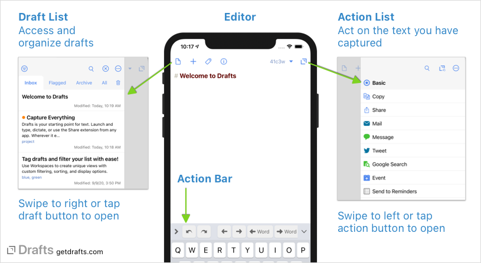
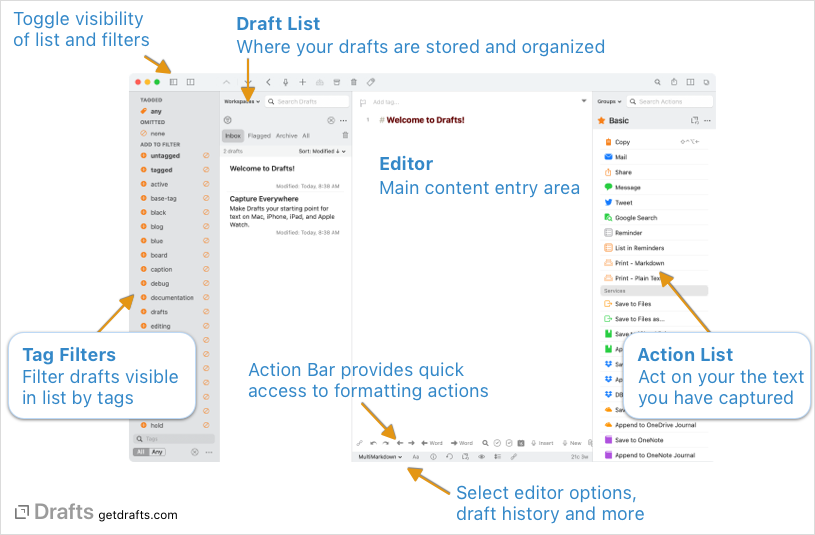

Getting Started
Drafts is a quick-capture note-taking app for iPhone, iPad, Mac and Apple Watch, which is focused on letting you get text out of your head, and providing flexible ways of managing and acting on that text once you have captured it. Don’t have Drafts installed yet? Download it for free from the iOS App Store or Mac App Store.
When you first launch drafts, it opens ready for you to type…so you can jot down your thoughts. Drafts is organized around three basic areas:
- Editor: In the center is the editor. Drafts launches directly to the editor, keeping your text first. Drafts is a plain text editor, and supports syntax highlighting for Markdown and a number of other markup formats, and has unique modes to let you arrange text, work with links and more. Learn more about the editor.
- Draft List: The draft list is where you manage drafts. Retrieve past drafts, filter and organize them, create workspaces, and more. Learn more about managing drafts. To access the drafts list:
- iOS: Swipe to the right anywhere in the editor, or tap the draft button in the upper left.
- Mac: Use the three-way toggle on the left side of the main window toolbar, or menu commands in the
Viewmenu.
- Action List: The action list is where you act on your drafts. It displays groups of actions that can be used to manipulate text, send to other services, apps, and more. Send mail, messages, tweet, save to files and more with actions. Learn more about actions. To access the action list:
- iOS: Swipe to the left anywhere in the editor, or tap the actions button in the upper right.
- Mac: Use toggle button at the right side of the main window toolbar, or menu commands in the
Viewmenu.
 
Next Steps
In addition to this site, we provide a number of resources for learning about Drafts.
- Our Screencasts cover many basics of Drafts and help you get oriented.
- Have questions? Ask on our Community site.
- Integration Guides are available with ready to use actions showing how to use Drafts with many popular services and apps - like Evernote, Dropbox, Todoist, OmniFocus, Things and more.
- The Action Directory is a searchable repository of actions shared by community members.